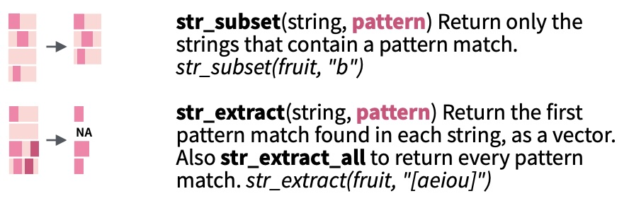
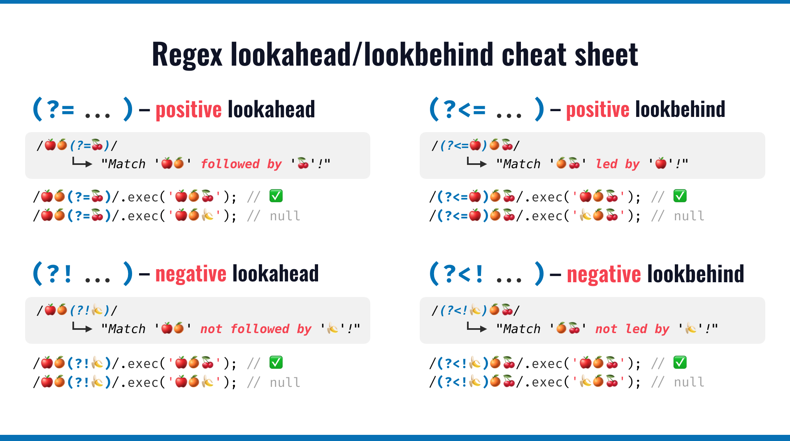
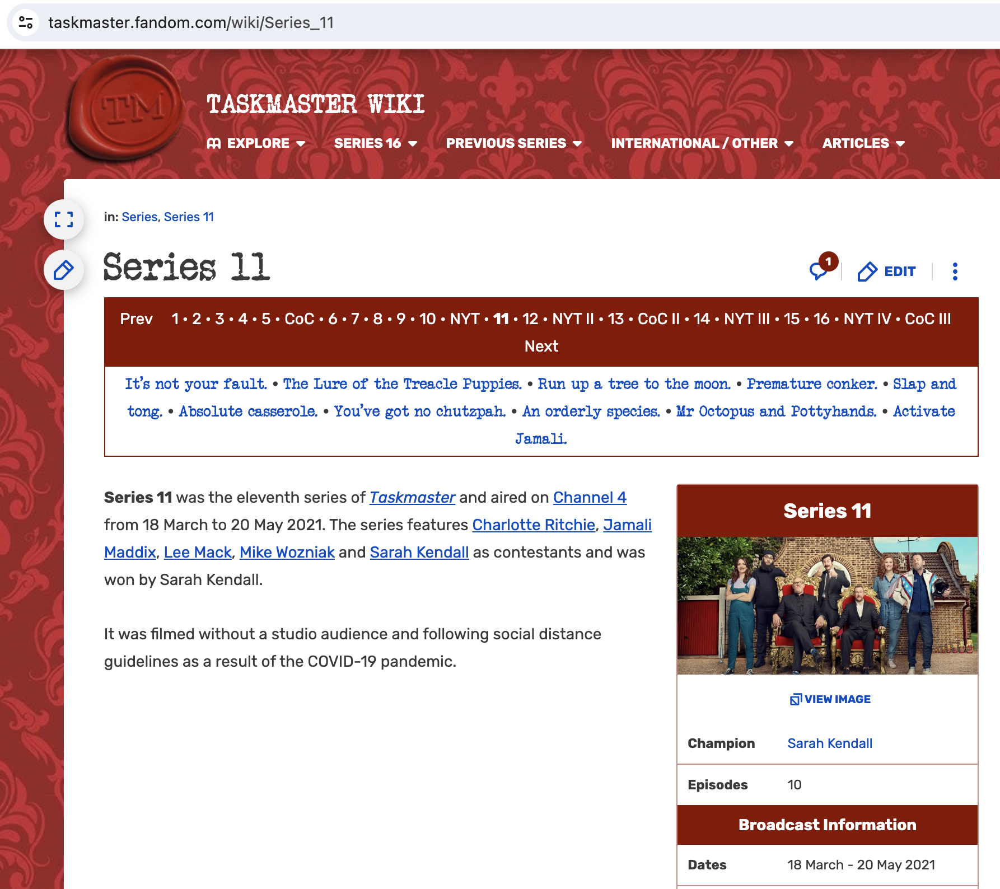
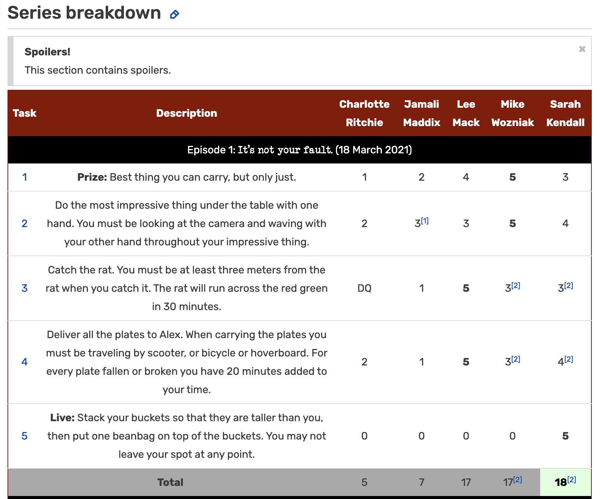

Regular Expressions
September 29 + October 1, 2025
Agenda 9/29/25
- What is a regular expression?
- Escape sequences, quantifiers, positions
- Character classes
Regular Expressions
A regular expression … is a sequence of characters that defines a search pattern. Usually such patterns are used by string searching algorithms for “find” or “find and replace” operations on strings, or for input validation. It is a technique developed in theoretical computer science and formal language theory.
Tools for characterizing a regular expression
Escape sequences
Just to scratch the surface, here are a few special characters that cannot be directly coded. Therefore, they are escaped with a backslash, \.
\': single quote.
\": double quote.
\n: new line.
\r: carriage return.
\t: tab character.
Quantifiers
Quantifiers specify how many repetitions of the pattern.
*: matches at least 0 times.
+: matches at least 1 times.
?: matches at most 1 times.
{n}: matches exactly n times.
{n,}: matches at least n times.
{n,m}: matches between n and m times.
str_*() review:
str_*() review:
fruit # length 80 [1] "apple" "apricot" "avocado"
[4] "banana" "bell pepper" "bilberry"
[7] "blackberry" "blackcurrant" "blood orange"
[10] "blueberry" "boysenberry" "breadfruit"
[13] "canary melon" "cantaloupe" "cherimoya"
[16] "cherry" "chili pepper" "clementine"
[19] "cloudberry" "coconut" "cranberry"
[22] "cucumber" "currant" "damson"
[25] "date" "dragonfruit" "durian"
[28] "eggplant" "elderberry" "feijoa"
[31] "fig" "goji berry" "gooseberry"
[34] "grape" "grapefruit" "guava"
[37] "honeydew" "huckleberry" "jackfruit"
[40] "jambul" "jujube" "kiwi fruit"
[43] "kumquat" "lemon" "lime"
[46] "loquat" "lychee" "mandarine"
[49] "mango" "mulberry" "nectarine"
[52] "nut" "olive" "orange"
[55] "pamelo" "papaya" "passionfruit"
[58] "peach" "pear" "persimmon"
[61] "physalis" "pineapple" "plum"
[64] "pomegranate" "pomelo" "purple mangosteen"
[67] "quince" "raisin" "rambutan"
[70] "raspberry" "redcurrant" "rock melon"
[73] "salal berry" "satsuma" "star fruit"
[76] "strawberry" "tamarillo" "tangerine"
[79] "ugli fruit" "watermelon" str_subset(fruit, "b") # length 23 [1] "banana" "bell pepper" "bilberry" "blackberry" "blackcurrant"
[6] "blood orange" "blueberry" "boysenberry" "breadfruit" "cloudberry"
[11] "cranberry" "cucumber" "elderberry" "goji berry" "gooseberry"
[16] "huckleberry" "jambul" "jujube" "mulberry" "rambutan"
[21] "raspberry" "salal berry" "strawberry" str_extract(fruit, "[aeiou]") # length 80 [1] "a" "a" "a" "a" "e" "i" "a" "a" "o" "u" "o" "e" "a" "a" "e" "e" "i" "e" "o"
[20] "o" "a" "u" "u" "a" "a" "a" "u" "e" "e" "e" "i" "o" "o" "a" "a" "u" "o" "u"
[39] "a" "a" "u" "i" "u" "e" "i" "o" "e" "a" "a" "u" "e" "u" "o" "o" "a" "a" "a"
[58] "e" "e" "e" "a" "i" "u" "o" "o" "u" "u" "a" "a" "a" "e" "o" "a" "a" "a" "a"
[77] "a" "a" "u" "a"Examples of quantifiers
strings <- c("a", "ab", "acb", "accb", "acccb", "accccb")
str_subset(strings, "ac*b")
str_subset(strings, "ac+b")
str_subset(strings, "ac*b", negate = TRUE)
str_subset(strings, "ac?b")
str_subset(strings, "ac{2}b")
str_subset(strings, "ac{2,}b")
str_subset(strings, "ac{2,3}b")Examples of quantifiers - solution
strings <- c("a", "ab", "acb", "accb", "acccb", "accccb")
str_subset(strings, "ac*b")[1] "ab" "acb" "accb" "acccb" "accccb"str_subset(strings, "ac+b")[1] "acb" "accb" "acccb" "accccb"str_subset(strings, "ac*b", negate = TRUE)[1] "a"str_subset(strings, "ac?b")[1] "ab" "acb"str_subset(strings, "ac{2}b")[1] "accb"str_subset(strings, "ac{2,}b")[1] "accb" "acccb" "accccb"str_subset(strings, "ac{2,3}b")[1] "accb" "acccb"Position of pattern within the string
^: matches the start of the string.
$: matches the end of the string.
\b: matches the boundary of a word. Don’t confuse it with^ $which marks the edge of a string.1
Examples of positions
strings <- c("abcd", "cdab", "cabd", "c abd")
str_subset(strings, "ab")
str_subset(strings, "^ab")
str_subset(strings, "ab$")
str_subset(strings, "\\bab")
str_subset(strings, "ab\\b")Examples of positions - solution
strings <- c("abcd", "cdab", "cabd", "c abd")
str_subset(strings, "ab")[1] "abcd" "cdab" "cabd" "c abd"str_subset(strings, "^ab")[1] "abcd"str_subset(strings, "ab$")[1] "cdab"str_subset(strings, "\\bab")[1] "abcd" "c abd"str_subset(strings, "ab\\b")[1] "cdab"Bounding words vs. phrases
strings <- c("apple", "applet", "pineapple", "apple pie", "I love apple pie")
str_subset(strings, "\\bapple\\b")
str_subset(strings, "^apple$")
str_subset(strings, "\\bapple pie\\b")
str_subset(strings, "^apple pie$")Bounding words vs. phrases - solutions
strings <- c("apple", "applet", "pineapple", "apple pie", "I love apple pie")
str_subset(strings, "\\bapple\\b")[1] "apple" "apple pie" "I love apple pie"str_subset(strings, "^apple$")[1] "apple"str_subset(strings, "\\bapple pie\\b")[1] "apple pie" "I love apple pie"str_subset(strings, "^apple pie$")[1] "apple pie"str_extract(strings, "\\bapple\\b")[1] "apple" NA NA "apple" "apple"str_extract(strings, "^apple$")[1] "apple" NA NA NA NA str_extract(strings, "\\bapple pie\\b")[1] NA NA NA "apple pie" "apple pie"str_extract(strings, "^apple pie$")[1] NA NA NA "apple pie" NA Operators
.: matches any single character, including letters, numbers, punctuation, and spaces (not new line)[...]: a character list, matches any one of the characters inside the square brackets. A-inside the brackets specifies a range of characters.
[^...]: an inverted character list, similar to[...], but matches any characters except those inside the square brackets.
\: suppress the special meaning of metacharacters in regular expression, i.e.$ * + . ? [ ] ^ { } | ( ) \. Since\itself needs to be escaped in R, we need to escape metacharacters with double backslash like\\$.
|: an “or” operator, matches patterns on either side of the|.
(...): grouping in regular expressions. This allows you to retrieve the bits that matched various parts of your regular expression so you can alter them or use them for building up a new string.- note: both
(ab|cde)orab|cdematch either the stringabor the stringcde. However,ab | cdematchesab cde(and does not match either ofaborcde) because the “or” is now whitespace on either side of|. That is, it matchesaband a space or space andcde.
Examples of operators
strings <- c("^ab", "ab", "abc", "abd", "abe", "ab 12", "a|b")
str_subset(strings, "ab.")
str_subset(strings, "ab[c-e]")
str_subset(strings, "ab[^c]")
str_subset(strings, "^ab")
str_subset(strings, "\\^ab")
str_subset(strings, "abc|abd")
str_subset(strings, "ab|c")
str_subset(strings, "ab | c")
str_subset(strings, "(ab)|c")
str_subset(strings, "(ab|c)")
str_subset(strings, "a(b|c)")
str_subset(strings, "a[b|c]")
str_extract(strings, "a[b|c]")Examples of operators - solution2
strings <- c("^ab", "ab", "abc", "abd", "abe", "ab 12", "a|b")
str_subset(strings, "ab.")[1] "abc" "abd" "abe" "ab 12"str_subset(strings, "ab[c-e]")[1] "abc" "abd" "abe"str_subset(strings, "ab[^c]")[1] "abd" "abe" "ab 12"str_subset(strings, "^ab")[1] "ab" "abc" "abd" "abe" "ab 12"str_subset(strings, "\\^ab")[1] "^ab"str_subset(strings, "abc|abd")[1] "abc" "abd"str_subset(strings, "ab|c")[1] "^ab" "ab" "abc" "abd" "abe" "ab 12"str_subset(strings, "ab | c")[1] "ab 12"str_subset(strings, "(ab)|c")[1] "^ab" "ab" "abc" "abd" "abe" "ab 12"str_subset(strings, "(ab|c)")[1] "^ab" "ab" "abc" "abd" "abe" "ab 12"str_subset(strings, "a(b|c)")[1] "^ab" "ab" "abc" "abd" "abe" "ab 12"str_subset(strings, "a[b|c]")[1] "^ab" "ab" "abc" "abd" "abe" "ab 12" "a|b" str_extract(strings, "a[b|c]")[1] "ab" "ab" "ab" "ab" "ab" "ab" "a|"Character classes
Character classes allow specifying entire classes of characters, such as numbers, letters, etc. There are two flavors of character classes, one uses [: and :] around a predefined name inside square brackets and the other uses \ and a special character. They are sometimes interchangeable.
(?i)before the string indicates that the match should be case insensitive (will make the rest of the string that follows case insensitive).[:digit:]or\d: digits, 0 1 2 3 4 5 6 7 8 9, equivalent to[0-9].
\D: non-digits, equivalent to[^0-9].
[:lower:]: lower-case letters, equivalent to[a-z].
[:upper:]: upper-case letters, equivalent to[A-Z].
[:alpha:]: alphabetic characters, equivalent to[[:lower:][:upper:]]or[A-z].
[:alnum:]: alphanumeric characters, equivalent to[[:alpha:][:digit:]]or[A-z0-9].
\w: word characters, equivalent to[[:alnum:]_]or[A-z0-9_](letter, number, or underscore).
\W: not word, equivalent to[^A-z0-9_].
[:blank:]: blank characters, i.e. space and tab.
[:space:]: space characters: tab, new line, vertical tab, form feed, carriage return, space.\s: whitespace.
\S: not whitespace.
[:punct:]: punctuation characters, ! ” # $ % & ’ ( ) * + , - . / : ; < = > ? @ [ ] ^ _ ` { | } ~.[:graph:]: graphical (human readable) characters: equivalent to[[:alnum:][:punct:]].[:print:]: printable characters, equivalent to[[:alnum:][:punct:]\\s].
Case sensitivity
strings <- c("applepie", "aPPlepIE", "applePIE", "appLEpie")
str_subset(strings, "(?i)applepie")[1] "applepie" "aPPlepIE" "applePIE" "appLEpie"str_subset(strings, "((?i)apple)pie")[1] "applepie" "appLEpie"str_subset(strings, "apple(?i)pie")[1] "applepie" "applePIE"str_subset(strings, "apple((?i)pie)")[1] "applepie" "applePIE"Thoughts on characters and spaces
.matches any single character except a newline\n(including letters, numbers, punctuation, and spaces)..does match whitespace (e.g., a space or tab)\smatches any whitespace including: spaces, tabs, new lines, and carriage returns[ \t]matches spaces and tabs only (not new lines or carriage returns)[^\s]matches any character except whitespace (including spaces, tabs, and new lines)[^\s]and[\S]are functionally equivalent- The pattern
[\s\S]matches any character including newlines and tabs. \wmatches any single word character (including letters, digits, and the underscore character_)\B: matches the empty string provided it is not at an edge of a word.
Some examples
More examples for practice!
Case insenstive
Match only the word
meterin “The cemetery is 1 meter from the stop sign.”Also match
Meterin “The cemetery is 1 Meter from the stop sign.”
Case insenstive
Match only the word
meterin “The cemetery is 1 meter from the stop sign.”Also match
MeterandmeTer…
string <- c(
"The cemetery is 1 meter from the stop sign.",
"The cemetery is 1 Meter from the stop sign.",
"The cemetery is 1 meTer from the stop sign."
)
str_extract(string, "(?i)\\bmeter\\b")[1] "meter" "Meter" "meTer"Proper times and dates
- Match dates like 01/15/24 and also like 01.15.24 and like 01-15-24.
string <- c("01/15/24", "01.15.24", "01-15-24", "011524", "January 15, 2024")Proper times and dates
- Match dates like 01/15/24 and also like 01.15.24 and like 01-15-24.
string <- c(
"01/15/24",
"01.15.24",
"01-15-24",
"01 15 24",
"011524",
"January 15, 2024"
)
str_extract(string, "\\d\\d.\\d\\d.\\d\\d")[1] "01/15/24" "01.15.24" "01-15-24" "01 15 24" NA NA str_extract(string, "\\d\\d[/.\\-]\\d\\d[/.\\-]\\d\\d")[1] "01/15/24" "01.15.24" "01-15-24" NA NA NA str_extract(string, "\\d{2}[/.\\-]\\d{2}[/.\\-]\\d{2}")[1] "01/15/24" "01.15.24" "01-15-24" NA NA NA Proper times and dates
- Match a time of day such as “9:17 am” or “12:30 pm”. Require that the time be a valid time (not “99:99 pm”). Assume no leading zeros (i.e., “09:17 am”).
string <- c("9:17 am", "12:30 pm", "99:99 pm", "09:17 am")Proper times and dates
- Match a time of day such as “9:17 am” or “12:30 pm”. Require that the time be a valid time (not “99:99 pm”). Assume no leading zeros (i.e., “09:17 am”).
^(1[012]|[1-9]):[0-5][0-9] (am|pm)$
string <- c("9:17 am", "12:30 pm", "99:99 pm", "09:17 am")
str_extract(string, "(1[012]|[1-9]):[0-5][0-9] (am|pm)")[1] "9:17 am" "12:30 pm" NA "9:17 am" str_extract(string, "^(1[012]|[1-9]):[0-5][0-9] (am|pm)$")[1] "9:17 am" "12:30 pm" NA NA Alternation operator
The “or” operator, | has the lowest precedence and parentheses have the highest precedence, which means that parentheses get evaluated before “or”.
- What is the difference between
\bMary|Jane|Sue\band\b(Mary|Jane|Sue)\b?
string <- c("Mary", "Mar", "Janet", "jane", "Susan", "Sue")
str_extract(string, "\\bMary|Jane|Sue\\b")
str_extract(string, "\\b(Mary|Jane|Sue)\\b")Alternation operator
The “or” operator, | has the lowest precedence and parentheses have the highest precedence, which means that parentheses get evaluated before “or”.
- What is the difference between
\bMary|Jane|Sue\band\b(Mary|Jane|Sue)\b?
string <- c("Mary", "Mar", "Janet", "jane", "Susan", "Sue")
str_extract(string, "\\bMary|Jane|Sue\\b")[1] "Mary" NA "Jane" NA NA "Sue" str_extract(string, "\\b(Mary|Jane|Sue)\\b")[1] "Mary" NA NA NA NA "Sue" Agenda 10/1/25
- Lookaround
str_*()functions with regular expressions
Lookaround
A lookaround specifies a place in the regular expression that will anchor the string you’d like to match.
- “x(?=y)” – positive lookahead (matches ‘x’ when it is followed by ‘y’)
- “x(?!y)” – negative lookahead (matches ‘x’ when it is not followed by ‘y’)
- “(?<=y)x” – positive lookbehind (matches ‘x’ when it is preceded by ‘y’)
- “(?<!y)x” – negative lookbehind (matches ‘x’ when it is not preceded by ‘y’)
Lookaround

Example - Taskmaster
Data scraped from the wiki site for the TV series, Taskmaster.

Scraping and wrangling Taskmaster
Goal: to scrape the Taskmaster wiki into a data frame including task, description, episode, episode name, air date, contestant, score, and series.3
REVISIT HERE
results <- read_html("https://taskmaster.fandom.com/wiki/Series_11") |>
html_element(".tmtable") |>
html_table() |>
mutate(episode = if_else(startsWith(Task, "Episode"), Task, NA)) |>
fill(episode, .direction = "down") |>
filter(
!startsWith(Task, "Episode"),
!(Task %in% c("Total", "Grand Total"))
) |>
pivot_longer(
cols = -c(Task, Description, episode),
names_to = "contestant",
values_to = "score"
) |>
mutate(series = 11)library(httr)
resp <- GET(
"https://taskmaster.fandom.com/api.php",
query = list(
action = "parse",
page = "Series_11",
format = "json"
)
)
result <- content(resp, as = "parsed")
html_content <- result$parse$text$`*`
results <- read_html(html_content) |>
html_element(".tmtable") |>
html_table() |>
mutate(episode = if_else(startsWith(Task, "Episode"), Task, NA)) |>
fill(episode, .direction = "down") |>
filter(
!startsWith(Task, "Episode"),
!(Task %in% c("Total", "Grand Total"))
) |>
pivot_longer(
cols = -c(Task, Description, episode),
names_to = "contestant",
values_to = "score"
) |>
mutate(series = 11)Scraping and wrangling Taskmaster data - results
results |>
select(Task, Description, episode, contestant, score, series) |>
head(10)# A tibble: 10 × 6
Task Description episode contestant score series
<chr> <chr> <chr> <chr> <chr> <dbl>
1 1 Prize: Best thing you can ca… Episod… Charlotte… 1 11
2 1 Prize: Best thing you can ca… Episod… Jamali Ma… 2 11
3 1 Prize: Best thing you can ca… Episod… Lee Mack 4 11
4 1 Prize: Best thing you can ca… Episod… Mike Wozn… 5 11
5 1 Prize: Best thing you can ca… Episod… Sarah Ken… 3 11
6 2 Do the most impressive thing… Episod… Charlotte… 2 11
7 2 Do the most impressive thing… Episod… Jamali Ma… 3[1] 11
8 2 Do the most impressive thing… Episod… Lee Mack 3 11
9 2 Do the most impressive thing… Episod… Mike Wozn… 5 11
10 2 Do the most impressive thing… Episod… Sarah Ken… 4 11more succinct results
Task Description episode contestant score series
1 Prize: Best thing… Episode 1… Charlotte… 1 11
1 Prize: Best thing… Episode 1… Jamali Ma… 2 11
1 Prize: Best thing… Episode 1… Lee Mack 4 11
1 Prize: Best thing… Episode 1… Mike Wozn… 5 11
1 Prize: Best thing… Episode 1… Sarah Ken… 3 11
2 Do the most… Episode 1… Charlotte… 2 11
2 Do the most… Episode 1… Jamali Ma… 3[1] 11
2 Do the most… Episode 1… Lee Mack 3 11
2 Do the most… Episode 1… Mike Wozn… 5 11
2 Do the most… Episode 1… Sarah Ken… 4 11Currently, the episode column contains entries like
"Episode 1: It's not your fault. (18 March 2021)"Cleaning the score column
results |> select(score) |> table()score
– ✔ ✘ 0 1 2 3 3[1] 3[2] 3[3] 4 4[2] 4[3] 5 DQ
7 1 1 11 37 42 47 1 3 1 49 1 1 55 13 How should the scores be stored? What is the cleaning task?

Extracting numeric information
Suppose we have the following string:
"3[1]"And we want to extract just the number “3”:
str_extract("3[1]", "3")[1] "3"Extracting numeric information
What if we don’t know which number to extract?
str_extract("3[1]", "\\d")[1] "3"str_extract("4[1]", "\\d")[1] "4"str_extract("10[1]", "\\d")[1] "1"str_extract("10[1]", "\\d+")[1] "10"str_extract("DQ", "\\d")[1] NAstr_extract()
str_extract() is an R function in the stringr package which can find regular expressions in strings of text.
str_extract("My cat is 3 years old", "cat")[1] "cat"str_extract("My cat is 3 years old", "3")[1] "3"Matching multiple options
str_extract() returns the first match; str_extract_all() allows more than one match.
str_extract("My cat is 3 years old", "cat|dog")[1] "cat"str_extract("My dog is 10 years old", "cat|dog")[1] "dog"str_extract("My dog is 10 years old, my cat is 3 years old", "cat|dog")[1] "dog"str_extract_all("My dog is 10 years old, my cat is 3 years old", "cat|dog")[[1]]
[1] "dog" "cat"Matching groups of characters
What if I want to extract a number?
str_extract("My cat is 3 years old", "\\d")[1] "3"What will the result be for the following code?
str_extract("My dog is 10 years old", "\\d")Matching groups of characters
What if I want to extract a number?
str_extract("My cat is 3 years old", "\\d")[1] "3"What will the result be for the following code?
str_extract("My dog is 10 years old", "\\d")[1] "1"Matching groups of characters
What if I want to extract a number?
str_extract("My cat is 3 years old", "\\d")[1] "3"What will the result be for the following code?
str_extract("My dog is 10 years old", "\\d")[1] "1"The + symbol in a regular expression means “repeated one or more times”
str_extract("My dog is 10 years old", "\\d+")[1] "10"Extracting from multiple strings
strings <- c("My cat is 3 years old", "My dog is 10 years old")
str_extract(strings, "\\d+")[1] "3" "10"Extracting from multiple strings
What if we have multiple instances across multiple strings? We need to be careful working with lists (instead of vectors).
strings <- c("My cat is 3 years old", "My dog is 10 years old")
str_extract(strings, "\\w")
str_extract_all(strings, "\\w")
str_extract(strings, "\\w+")
str_extract_all(strings, "\\w+")Extracting from multiple strings
What if we have multiple instances across multiple strings? We need to be careful working with lists (instead of vectors).
strings <- c("My cat is 3 years old", "My dog is 10 years old")
str_extract(strings, "\\w")[1] "M" "M"str_extract_all(strings, "\\w")[[1]]
[1] "M" "y" "c" "a" "t" "i" "s" "3" "y" "e" "a" "r" "s" "o" "l" "d"
[[2]]
[1] "M" "y" "d" "o" "g" "i" "s" "1" "0" "y" "e" "a" "r" "s" "o" "l" "d"str_extract(strings, "\\w+")[1] "My" "My"str_extract_all(strings, "\\w+")[[1]]
[1] "My" "cat" "is" "3" "years" "old"
[[2]]
[1] "My" "dog" "is" "10" "years" "old" Extracting episode information
Currently, the episode column contains entries like:
"Episode 2: The pie whisperer. (4 August 2015)"How would I extract just the episode number?
Extracting episode information
Currently, the episode column contains entries like:
"Episode 2: The pie whisperer. (4 August 2015)"How would I extract just the episode number?
str_extract("Episode 2: The pie whisperer. (4 August 2015)", "\\d+")[1] "2"Extracting episode information
Currently, the episode column contains entries like:
"Episode 2: The pie whisperer. (4 August 2015)"How would I extract the episode name?
Goal: find a pattern to match: anything that starts with a :, ends with a .
Let’s break down that task into pieces.
Extracting episode information
How can we find the period at the end of the sentence? What does each of these lines of code return?
str_extract("Episode 2: The pie whisperer. (4 August 2015)", ".")str_extract("Episode 2: The pie whisperer. (4 August 2015)", ".+")str_extract("Episode 2: The pie whisperer. (4 August 2015)", "\\.")Extracting episode information - solution
str_extract("Episode 2: The pie whisperer. (4 August 2015)", ".")[1] "E"str_extract("Episode 2: The pie whisperer. (4 August 2015)", ".+")[1] "Episode 2: The pie whisperer. (4 August 2015)"We use an escape character when we actually want to choose a period:
str_extract("Episode 2: The pie whisperer. (4 August 2015)", "\\.")[1] "."Extracting episode information
Goal: find a pattern to match: anything that starts with a :, ends with a .
str_extract("Episode 2: The pie whisperer. (4 August 2015)", ":.+\\.")[1] ": The pie whisperer."Lookaround (again)
Lookbehinds
(?<=y)x – positive lookbehind (matches ‘x’ when it is preceded by ‘y’)
str_extract("Episode 2: The pie whisperer. (4 August 2015)", "(?<=: ).+")[1] "The pie whisperer. (4 August 2015)"str_extract("Episode 2: The pie whisperer. (4 August 2015)", "(?<=\\. ).+")[1] "(4 August 2015)"Lookaheads
x(?=y) – positive lookahead (matches ‘x’ when it is followed by ‘y’)
str_extract("Episode 2: The pie whisperer. (4 August 2015)", ".+(?=\\.)")[1] "Episode 2: The pie whisperer"str_extract("Episode 2: The pie whisperer. (4 August 2015)", ".+(?=:)")[1] "Episode 2"Extracting episode information
Getting everything between the : and the .
str_extract("Episode 2: The pie whisperer. (4 August 2015)", "(?<=: ).+(?=\\.)")[1] "The pie whisperer"Extracting air date
I want to extract just the air date. What pattern do I want to match?
str_extract("Episode 2: The pie whisperer. (4 August 2015)", ...)Extracting air date
str_extract(
"Episode 2: The pie whisperer. (4 August 2015)",
"(?<=\\().+(?=\\))"
)[1] "4 August 2015"Wrangling the episode info
Currently:
# A tibble: 270 × 1
episode
<chr>
1 Episode 1: It's not your fault. (18 March 2021)
2 Episode 1: It's not your fault. (18 March 2021)
3 Episode 1: It's not your fault. (18 March 2021)
4 Episode 1: It's not your fault. (18 March 2021)
5 Episode 1: It's not your fault. (18 March 2021)
6 Episode 1: It's not your fault. (18 March 2021)
7 Episode 1: It's not your fault. (18 March 2021)
8 Episode 1: It's not your fault. (18 March 2021)
9 Episode 1: It's not your fault. (18 March 2021)
10 Episode 1: It's not your fault. (18 March 2021)
# ℹ 260 more rowsWrangling the episode info
One option:
results |>
select(episode) |>
mutate(
episode_name = str_extract(episode, "(?<=: ).+(?=\\.)"),
air_date = str_extract(episode, "(?<=\\().+(?=\\))"),
episode = str_extract(episode, "\\d+")
) |>
mutate(air_date2 = dmy(air_date))# A tibble: 270 × 4
episode episode_name air_date air_date2
<chr> <chr> <chr> <date>
1 1 It's not your fault 18 March 2021 2021-03-18
2 1 It's not your fault 18 March 2021 2021-03-18
3 1 It's not your fault 18 March 2021 2021-03-18
4 1 It's not your fault 18 March 2021 2021-03-18
5 1 It's not your fault 18 March 2021 2021-03-18
6 1 It's not your fault 18 March 2021 2021-03-18
7 1 It's not your fault 18 March 2021 2021-03-18
8 1 It's not your fault 18 March 2021 2021-03-18
9 1 It's not your fault 18 March 2021 2021-03-18
10 1 It's not your fault 18 March 2021 2021-03-18
# ℹ 260 more rowsWrangling the episode info
Another option:
results |>
separate_wider_regex(
episode,
patterns = c(
".+ ",
episode = "\\d+",
": ",
episode_name = ".+",
"\\. \\(",
air_date = ".+",
"\\)"
)
) |>
mutate(air_date2 = dmy(air_date))# A tibble: 270 × 4
episode episode_name air_date air_date2
<chr> <chr> <chr> <date>
1 1 It's not your fault 18 March 2021 2021-03-18
2 1 It's not your fault 18 March 2021 2021-03-18
3 1 It's not your fault 18 March 2021 2021-03-18
4 1 It's not your fault 18 March 2021 2021-03-18
5 1 It's not your fault 18 March 2021 2021-03-18
6 1 It's not your fault 18 March 2021 2021-03-18
7 1 It's not your fault 18 March 2021 2021-03-18
8 1 It's not your fault 18 March 2021 2021-03-18
9 1 It's not your fault 18 March 2021 2021-03-18
10 1 It's not your fault 18 March 2021 2021-03-18
# ℹ 260 more rowsFootnotes
A word boundary is a position between a word character (typically [A-Za-z0-9_]) and a non-word character (anything that is not a word character, such as whitespace, punctuation, etc.).↩︎
it turns out that “ab|c” and “(ab)|c” and “(ab|c)” are all equivalent! Additionally, different regular expression parsers will treat spaces differently.↩︎
Thanks to Ciaran Evans at Wake Forest University for example and code, https://sta279-f23.github.io/↩︎
Reuse
CC-BY-SA-4.0